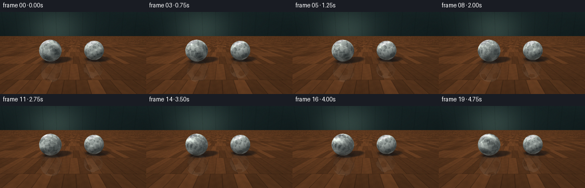
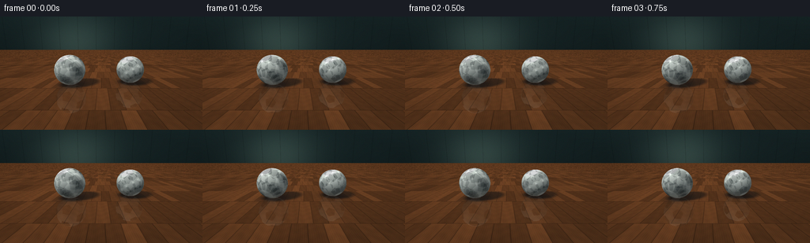

CODING AGENTS AS PIXEL WORLD MODELS
traex/DeepSeek-V4.1-Flash · instance_preservation_0027
点击播放 · 原生 RGB 像素
逐轮保存的候选
回放视频、检查图与代码变化。
每份候选均可单独播放。实际图片检查记录在下方工具轨迹中。
候选 01播放与检查图
点击播放 · 原生 RGB 像素


展开代码变化
--- 上一保存版本
+++ 本次保存版本
@@ -0,0 +1,410 @@
+"""Procedural renderer for: Two footballs spin rapidly on the floor."""
+
+from __future__ import annotations
+
+import json
+from pathlib import Path
+
+import numpy as np
+from PIL import Image, ImageFilter
+
+from artifact_io import save
+
+
+ROOT = Path(__file__).resolve().parent
+SPEC = json.loads((ROOT / "task_spec.json").read_text())
+WIDTH = int(SPEC["width"])
+HEIGHT = int(SPEC["height"])
+FRAME_COUNT = int(SPEC["frames"])
+FPS = float(SPEC["fps"])
+
+# Render above the delivery resolution, then downsample for clean edges.
+SS = 3
+RW = WIDTH * SS
+RH = HEIGHT * SS
+
+WORLD_UP = np.array([0.0, 1.0, 0.0], dtype=np.float32)
+KEY_LIGHT = np.array([-0.52, 0.88, -0.46], dtype=np.float32)
+KEY_LIGHT /= np.linalg.norm(KEY_LIGHT)
+FILL_LIGHT = np.array([0.72, 0.24, 0.62], dtype=np.float32)
+FILL_LIGHT /= np.linalg.norm(FILL_LIGHT)
+
+
+def normalize(vector: np.ndarray) -> np.ndarray:
+ return vector / np.linalg.norm(vector)
+
+
+def smoothstep(edge0: float, edge1: float, value: np.ndarray) -> np.ndarray:
+ scaled = np.clip((value - edge0) / (edge1 - edge0), 0.0, 1.0)
+ return scaled * scaled * (3.0 - 2.0 * scaled)
+
+
+def fract(value: np.ndarray | float) -> np.ndarray:
+ return value - np.floor(value)
+
+
+def hash01(a: np.ndarray | float, b: np.ndarray | float = 0.0) -> np.ndarray:
+ return fract(np.sin(a * 127.1 + b * 311.7) * 43758.5453123)
+
+
+def rotation_matrix(axis: np.ndarray, angle: float) -> np.ndarray:
+ axis = normalize(axis.astype(np.float32))
+ x, y, z = axis
+ c = np.cos(angle)
+ s = np.sin(angle)
+ one_c = 1.0 - c
+ return np.array(
+ [
+ [c + x * x * one_c, x * y * one_c - z * s, x * z * one_c + y * s],
+ [y * x * one_c + z * s, c + y * y * one_c, y * z * one_c - x * s],
+ [z * x * one_c - y * s, z * y * one_c + x * s, c + z * z * one_c],
+ ],
+ dtype=np.float32,
+ )
+
+
+def make_camera():
+ origin = np.array([0.0, 1.08, -3.35], dtype=np.float32)
+ target = np.array([0.0, 0.37, 0.36], dtype=np.float32)
+ forward = normalize(target - origin)
+ right = normalize(np.cross(WORLD_UP, forward))
+ up = normalize(np.cross(forward, right))
+ tan_half = 0.465
+ aspect = WIDTH / HEIGHT
+
+ ys, xs = np.mgrid[0:RH, 0:RW]
+ u = ((xs + 0.5) / RW * 2.0 - 1.0).astype(np.float32)
+ v = (1.0 - (ys + 0.5) / RH * 2.0).astype(np.float32)
+ directions = (
+ forward[None, None, :]
+ + u[:, :, None] * (tan_half * aspect) * right[None, None, :]
+ + v[:, :, None] * tan_half * up[None, None, :]
+ )
+ directions /= np.linalg.norm(directions, axis=2, keepdims=True)
+ return origin, directions, forward
+
+
+def intersect_sphere(
+ origin: np.ndarray,
+ directions: np.ndarray,
+ center: np.ndarray,
+ radius: float,
+) -> tuple[np.ndarray, np.ndarray]:
+ offset = origin - center
+ b = directions @ offset
+ c = float(offset @ offset) - radius * radius
+ discriminant = b * b - c
+ hit = discriminant > 0.0
+ root = np.sqrt(np.maximum(discriminant, 0.0))
+ distance = -b - root
+ hit &= distance > 0.0001
+ distance = np.where(hit, distance, np.inf).astype(np.float32)
+ points = origin[None, :] + directions * distance[:, None]
+ normals = (points - center[None, :]) / radius
+ return distance, normals
+
+
+def floor_surface(x: np.ndarray, z: np.ndarray) -> np.ndarray:
+ plank_width = 0.285
+ plank_length = 1.30
+ row = np.floor(z / plank_length)
+ local_z = z - row * plank_length
+ shifted_x = x + fract(row * 0.6180339) * plank_width
+ column = np.floor(shifted_x / plank_width)
+ local_x = shifted_x - column * plank_width
+
+ tone = 0.82 + 0.30 * hash01(row, column)
+ fine = 0.025 * np.sin(local_x * 185.0 + 0.8 * np.sin(local_z * 11.0 + column))
+ broad = 0.022 * np.sin(local_x * 34.0 + local_z * 4.7 + 3.0 * hash01(column, row))
+ knot = 0.018 * np.sin(local_z * 27.0 + np.sin(local_x * 18.0 + column) * 1.8)
+ grain = 1.0 + fine + broad + knot
+
+ base = np.array([0.39, 0.235, 0.128], dtype=np.float32)
+ color = base[None, :] * tone[:, None] * grain[:, None]
+
+ side_seam = smoothstep(0.010, 0.0025, local_x) + smoothstep(plank_width - 0.010, plank_width - 0.0025, local_x)
+ end_seam = smoothstep(0.010, 0.0025, local_z) + smoothstep(plank_length - 0.010, plank_length - 0.0025, local_z)
+ seam = np.clip(side_seam + end_seam, 0.0, 1.0)
+ color *= (1.0 - 0.30 * seam[:, None])
+
+ # Fine varnish grain catches the room light.
+ sheen = 0.018 * np.sin(local_x * 310.0 + local_z * 7.0)
+ color += np.maximum(sheen, 0.0)[:, None] * np.array([0.42, 0.30, 0.18], dtype=np.float32)
+ return color
+
+
+def wall_surface(x: np.ndarray, y: np.ndarray) -> np.ndarray:
+ base = np.array([0.095, 0.155, 0.16], dtype=np.float32)
+ vertical = np.clip(y / 3.2, 0.0, 1.0)
+ glow = np.exp(-((x + 1.7) ** 2 / 6.5 + (y - 1.65) ** 2 / 4.0))
+ color = base[None, :] * (0.72 + 0.32 * vertical[:, None])
+ color += glow[:, None] * np.array([0.12, 0.145, 0.125], dtype=np.float32)
+
+ panel = fract((x + 4.0) / 1.22)
+ panel_line = smoothstep(0.014, 0.004, np.minimum(panel, 1.0 - panel))
+ rail = smoothstep(0.018, 0.004, np.abs(y - 0.18))
+ color *= (1.0 - 0.22 * panel_line[:, None] - 0.30 * rail[:, None])
+ color += np.maximum(0.12 - y, 0.0)[:, None] * np.array([0.10, 0.08, 0.045], dtype=np.float32)
+ return color
+
+
+def icosahedron_vertices() -> np.ndarray:
+ phi = (1.0 + np.sqrt(5.0)) * 0.5
+ vertices = [
+ (0.0, 1.0, phi),
+ (0.0, -1.0, phi),
+ (0.0, 1.0, -phi),
+ (0.0, -1.0, -phi),
+ (1.0, phi, 0.0),
+ (-1.0, phi, 0.0),
+ (1.0, -phi, 0.0),
+ (-1.0, -phi, 0.0),
+ (phi, 0.0, 1.0),
+ (-phi, 0.0, 1.0),
+ (phi, 0.0, -1.0),
+ (-phi, 0.0, -1.0),
+ ]
+ result = np.asarray(vertices, dtype=np.float32)
+ return result / np.linalg.norm(result, axis=1, keepdims=True)
+
+
+ICO_VERTICES = icosahedron_vertices()
+PENTAGON_APOTHEM = 0.285
+PENTAGON_NORMALS = np.array(
+ [(np.cos(np.deg2rad(90.0 + 72.0 * k)), np.sin(np.deg2rad(90.0 + 72.0 * k))) for k in range(5)],
+ dtype=np.float32,
+)
+
+
+def football_texture(object_normals: np.ndarray) -> np.ndarray:
+ """Return a procedural classic football texture for unit object-space normals."""
+ dots = object_normals @ ICO_VERTICES.T
+ nearest = np.argmax(dots, axis=1)
+ black = np.zeros(len(object_normals), dtype=bool)
+ seam = np.zeros(len(object_normals), dtype=bool)
+
+ for index, center in enumerate(ICO_VERTICES):
+ selected = nearest == index
+ if not np.any(selected):
+ continue
+ normals = object_normals[selected]
+ center_dot = np.clip(normals @ center, 0.08, 1.0)
+
+ reference = np.array([0.0, 0.0, 1.0], dtype=np.float32)
+ if abs(float(center @ reference)) > 0.88:
+ reference = np.array([0.0, 1.0, 0.0], dtype=np.float32)
+ tangent_u = normalize(np.cross(center, reference))
+ tangent_v = normalize(np.cross(center, tangent_u))
+
+ # Gnomonic tangent coordinates make the spherical pentagons read cleanly.
+ gu = (normals @ tangent_u) / center_dot
+ gv = (normals @ tangent_v) / center_dot
+ boundary = np.max(gu[:, None] * PENTAGON_NORMALS[:, 0] + gv[:, None] * PENTAGON_NORMALS[:, 1], axis=1)
+ black[selected] = boundary <= PENTAGON_APOTHEM
+ seam[selected] = np.abs(boundary - PENTAGON_APOTHEM) < 0.018
+
+ texture = np.empty((len(object_normals), 3), dtype=np.float32)
+ texture[:] = np.array([0.91, 0.925, 0.885], dtype=np.float32)
+ texture[seam] = np.array([0.36, 0.38, 0.35], dtype=np.float32)
+ texture[black] = np.array([0.045, 0.052, 0.052], dtype=np.float32)
+
+ # A tiny amount of wear prevents the leather from looking like flat vector art.
+ wear = 0.018 * np.sin(object_normals[:, 0] * 83.0 + object_normals[:, 1] * 47.0 + object_normals[:, 2] * 61.0)
+ texture *= (1.0 + wear)[:, None]
+ return np.clip(texture, 0.0, 1.0)
+
+
+def shade_football(
+ world_normals: np.ndarray,
+ object_normals: np.ndarray,
+ view_direction: np.ndarray,
+) -> np.ndarray:
+ texture = football_texture(object_normals)
+ diffuse = np.maximum(world_normals @ KEY_LIGHT, 0.0)
+ fill = np.maximum(world_normals @ FILL_LIGHT, 0.0)
+ ambient = 0.34 + 0.14 * (world_normals[:, 1] * 0.5 + 0.5)
+ underside_ao = 0.76 + 0.24 * np.clip((world_normals[:, 1] + 0.35) / 1.35, 0.0, 1.0)
+ lighting = ambient + 0.69 * diffuse + 0.11 * fill
+ lighting *= underside_ao
+
+ half_vector = KEY_LIGHT[None, :] - view_direction
+ half_vector /= np.linalg.norm(half_vector, axis=1, keepdims=True)
+ specular = np.power(np.maximum(np.sum(world_normals * half_vector, axis=1), 0.0), 52.0) * 0.72
+ fresnel = np.power(1.0 - np.clip(np.sum(world_normals * (-view_direction), axis=1), 0.0, 1.0), 3.0)
+ color = texture * lighting[:, None]
+ color += specular[:, None] * (0.72 + 0.28 * texture)
+ color += fresnel[:, None] * np.array([0.055, 0.075, 0.082], dtype=np.float32)
+ color += np.maximum(-world_normals[:, 1], 0.0)[:, None] ** 2 * np.array([0.065, 0.035, 0.014], dtype=np.float32)
+ return np.clip(color, 0.0, 1.0)
+
+
+def apply_floor_shadow(
+ floor_color: np.ndarray,
+ x: np.ndarray,
+ z: np.ndarray,
+ ball: dict,
+) -> np.ndarray:
+ center = ball["center"]
+ radius = ball["radius"]
+ vector = np.stack((center[0] - x, np.full_like(x, center[1]), center[2] - z), axis=1)
+ projected = vector @ KEY_LIGHT
+ perpendicular_sq = np.sum(vector * vector, axis=1) - projected * projected
+ distance = np.sqrt(np.maximum(perpendicular_sq, 0.0))
+ penumbra = np.clip((radius + 0.15 - distance) / 0.17, 0.0, 1.0)
+ directional = penumbra * (projected > 0.0)
+
+ ground_distance = np.sqrt((x - center[0]) ** 2 + (z - center[2]) ** 2)
+ contact = np.exp(-(ground_distance / (radius * 0.92)) ** 2) * 0.38
+ shade = np.clip(0.56 * directional + contact, 0.0, 0.78)
+ shadow_tint = np.array([0.24, 0.25, 0.27], dtype=np.float32)
+ return floor_color * (1.0 - shade[:, None]) + shadow_tint[None, :] * shade[:, None] * 0.28
+
+
+def reflection_color(
+ floor_points: np.ndarray,
+ directions: np.ndarray,
+ ball: dict,
+ angle: float,
+) -> tuple[np.ndarray, np.ndarray]:
+ reflected = directions - 2.0 * (directions @ WORLD_UP)[:, None] * WORLD_UP[None, :]
+ reflected /= np.linalg.norm(reflected, axis=1, keepdims=True)
+ offset = floor_points - ball["center"]
+ b = np.sum(reflected * offset, axis=1)
+ c = np.sum(offset * offset, axis=1) - ball["radius"] ** 2
+ discriminant = b * b - c
+ distance = -b - np.sqrt(np.maximum(discriminant, 0.0))
+ hit = (discriminant > 0.0) & (distance > 0.0001)
+ points = floor_points + reflected * distance[:, None]
+ world_normals = (points - ball["center"]) / ball["radius"]
+ rotation = rotation_matrix(ball["axis"], angle)
+ object_normals = world_normals @ rotation
+ color = shade_football(world_normals, object_normals, -reflected)
+ return color, hit
+
+
+def render_frame(frame_index: int, origin: np.ndarray, directions: np.ndarray) -> np.ndarray:
+ flat_directions = directions.reshape(-1, 3)
+ pixel_count = flat_directions.shape[0]
+ background_distance = np.full(pixel_count, np.inf, dtype=np.float32)
+ image = np.zeros((pixel_count, 3), dtype=np.float32)
+
+ floor_distance = np.where(flat_directions[:, 1] < -1e-6, -origin[1] / flat_directions[:, 1], np.inf)
+ floor_hit = np.isfinite(floor_distance) & (floor_distance > 0.0)
+ floor_points = origin[None, :] + flat_directions * floor_distance[:, None]
+ floor_color = np.zeros((pixel_count, 3), dtype=np.float32)
+ if np.any(floor_hit):
+ fx = floor_points[floor_hit, 0]
+ fz = floor_points[floor_hit, 2]
+ fc = floor_surface(fx, fz)
+ sheen = np.power(np.maximum(np.sum(-flat_directions[floor_hit] * KEY_LIGHT, axis=1), 0.0), 7.0)
+ fc += sheen[:, None] * np.array([0.025, 0.020, 0.012], dtype=np.float32)
+ floor_color[floor_hit] = fc
+ image[floor_hit] = floor_color[floor_hit]
+ background_distance[floor_hit] = floor_distance[floor_hit]
+
+ wall_z = 5.15
+ wall_distance = np.where(flat_directions[:, 2] > 1e-6, (wall_z - origin[2]) / flat_directions[:, 2], np.inf)
+ wall_points = origin[None, :] + flat_directions * wall_distance[:, None]
+ wall_hit = (
+ np.isfinite(wall_distance)
+ & (wall_distance > 0.0)
+ & (wall_points[:, 1] >= 0.0)
+ & (wall_distance < background_distance)
+ )
+ if np.any(wall_hit):
+ image[wall_hit] = wall_surface(wall_points[wall_hit, 0], wall_points[wall_hit, 1])
+ background_distance[wall_hit] = wall_distance[wall_hit]
+
+ # The unlit gaps above the room are a quiet, slightly cool falloff.
+ missed = ~np.isfinite(background_distance)
+ if np.any(missed):
+ horizon = np.clip((flat_directions[missed, 1] + 0.05) / 0.42, 0.0, 1.0)
+ image[missed] = (
+ np.array([0.045, 0.070, 0.078], dtype=np.float32)[None, :] * (1.0 - horizon[:, None] * 0.30)
+ )
+
+ balls = [
+ {
+ "center": np.array([-0.96, 0.465, 0.39], dtype=np.float32),
+ "radius": 0.465,
+ "axis": np.array([0.30, 0.68, 0.67], dtype=np.float32),
+ "rate": np.deg2rad(690.0),
+ "phase": 0.25,
+ },
+ {
+ "center": np.array([0.94, 0.438, 0.62], dtype=np.float32),
+ "radius": 0.438,
+ "axis": np.array([-0.38, 0.76, 0.53], dtype=np.float32),
+ "rate": np.deg2rad(-765.0),
+ "phase": 1.75,
+ },
+ ]
+
+ if np.any(floor_hit):
+ indices = np.flatnonzero(floor_hit)
+ fx = floor_points[indices, 0]
+ fz = floor_points[indices, 2]
+ floor_colors = floor_color[indices].copy()
+ for ball in balls:
+ floor_colors = apply_floor_shadow(floor_colors, fx, fz, ball)
+ for ball in balls:
+ frame_time = frame_index / FPS
+ angle = ball["phase"] + ball["rate"] * frame_time
+ refl, refl_hit = reflection_color(floor_points[indices], flat_directions[indices], ball, angle)
+ attenuation = 0.14 * (1.0 - 0.45 * smoothstep(0.0, 1.2, np.sqrt((fx - ball["center"][0]) ** 2 + (fz - ball["center"][2]) ** 2)))
+ floor_colors = np.where(refl_hit[:, None], floor_colors * (1.0 - attenuation[:, None]) + refl * attenuation[:, None], floor_colors)
+ image[indices] = floor_colors
+
+ view_directions = -flat_directions
+ for ball in balls:
+ sphere_distance, normals = intersect_sphere(origin, flat_directions, ball["center"], ball["radius"])
+ visible = sphere_distance < background_distance
+ if not np.any(visible):
+ continue
+ indices = np.flatnonzero(visible)
+ normals_at_pixels = normals.reshape(-1, 3)[indices]
+ views_at_pixels = view_directions[indices]
+
+ # Six temporal samples convey a fast spin without a jarring frame-to-frame strobe.
+ accumulated = np.zeros((len(indices), 3), dtype=np.float32)
+ temporal_samples = 6
+ for sample in range(temporal_samples):
+ shutter = (sample + 0.5) / temporal_samples - 0.5
+ angle = ball["phase"] + ball["rate"] * ((frame_index + shutter) / FPS)
+ rotation = rotation_matrix(ball["axis"], angle)
+ object_normals = normals_at_pixels @ rotation
+ accumulated += shade_football(normals_at_pixels, object_normals, views_at_pixels)
+ image[indices] = accumulated / temporal_samples
+
+ image = image.reshape(RH, RW, 3)
+
+ # Gentle lens bloom, vignette, and color shaping at render resolution.
+ image_u8 = np.clip(image * 255.0, 0.0, 255.0).astype(np.uint8)
+ bloom_source = Image.fromarray(image_u8)
+ bright = np.clip(image * 255.0 - 205.0, 0.0, 50.0).astype(np.uint8)
+ bloom = Image.fromarray(bright).filter(ImageFilter.GaussianBlur(radius=4.0))
+ bloom_array = np.asarray(bloom, dtype=np.float32) / 255.0
+ image += bloom_array * 0.25
+
+ yy, xx = np.mgrid[0:RH, 0:RW]
+ nx = (xx + 0.5) / RW * 2.0 - 1.0
+ ny = (yy + 0.5) / RH * 2.0 - 1.0
+ vignette = 1.0 - 0.16 * np.clip(nx * nx * 0.72 + ny * ny, 0.0, 1.0)
+ image *= vignette[:, :, None]
+ image = np.clip(image * 255.0, 0.0, 255.0).astype(np.uint8)
+
+ resized = Image.fromarray(image).resize((WIDTH, HEIGHT), Image.Resampling.LANCZOS)
+ result = np.asarray(resized, dtype=np.float32)
+ rng = np.random.default_rng(1000 + frame_index)
+ result += rng.normal(0.0, 0.65, result.shape)
+ return np.clip(result, 0.0, 255.0).astype(np.uint8)
+
+
+def main() -> None:
+ origin, directions, _ = make_camera()
+ frames = [render_frame(index, origin, directions) for index in range(FRAME_COUNT)]
+ save(frames, ROOT)
+
+
+if __name__ == "__main__":
+ main()
可观测工具轨迹
实际执行的命令与返回图片。
命令 1exit 0
/bin/bash -c "pwd && rg --files -g 'prompt.txt' -g 'GENERATION_RULES.md' -g 'task_spec.json' -g '"'!node_modules'"' -g '"'!vendor'"'"
命令 2exit 0
/bin/bash -c 'ls -la'
命令 3exit 0
/bin/bash -c 'cat GENERATION_RULES.md'
命令 4exit 0
/bin/bash -c 'cat prompt.txt'
命令 5exit 0
/bin/bash -c 'cat task_spec.json'
命令 6exit 0
/bin/bash -c "sed -n '1,240p' artifact_io.py && sed -n '1,240p' player_template.html"
命令 7exit 1
/bin/bash -c 'python generate.py'
命令 8exit 1
/bin/bash -c 'python generate.py'
命令 9exit 0
/bin/bash -c 'python generate.py'
命令 10exit 0
/bin/bash -c "ls -lh inspection.png transition_check.png pixels.npz index.html frames/00.png frames/19.png && python - <<'PY'
from PIL import Image
im=Image.open('inspection.png')
print('inspection', im.size)
print('frame', Image.open('frames/00.png').size)
PY"命令 11exit 0
/bin/bash -c "python - <<'PY'
import numpy as np
from PIL import Image
for i in [0,5,10,15,19]:
a=np.asarray(Image.open(f'frames/{i:02d}.png')).astype(float)
print(i, 'mean', a.mean(axis=(0,1)).round(1), 'std', a.std().round(1), 'minmax', a.min(), a.max())
PY"命令 12exit 0
/bin/bash -c "python - <<'PY'
from PIL import Image
import numpy as np
im=np.asarray(Image.open('inspection.png').convert('RGB'))
# Print a coarse luminance/color map of frame 0, sampled from the inspection sheet.
f=np.asarray(Image.open('frames/00.png').convert('RGB'))
for y in range(4,144,4):
row=''
for x in range(0,256,4):
r,g,b=f[y:y+4,x:x+4].mean((0,1))
lum=.2126*r+.7152*g+.0722*b
if lum>190: c='@'
elif lum>145: c='#'
elif lum>100: c='O'
elif lum>65: c='o'
elif lum>40: c='.'
else: c=' '
row+=c
print(row)
PY"命令 13exit 0
/bin/bash -c "python - <<'PY'
from PIL import Image
import numpy as np
frames=np.stack([np.asarray(Image.open(f'frames/{i:02d}.png').convert('RGB')).astype(np.int16) for i in range(20)])
# central ball regions, selected manually around the two silhouettes
regions=[('left',slice(45,112),slice(60,130)),('right',slice(45,112),slice(135,215)),('floor',slice(112,144),slice(0,256)),('wall',slice(0,44),slice(0,256))]
for name,ys,xs in regions:
d=np.abs(np.diff(frames[:,ys,xs],axis=0)).mean((1,2,3))
print(name, 'frame-to-frame MAD', np.round(d,2).tolist(), 'mean', round(float(d.mean()),2))
# Compare neighboring frame pixels in bright ball areas.
for i in range(19):
d=np.abs(frames[i+1]-frames[i]).mean(2)
print(i, 'changed>12', int((d>12).sum()), 'max', int(d.max()))
PY"保存候选 1 份；完成命令 13 次；可验证图片返回 0 张。原始 API 响应与完整日志保留在本地。